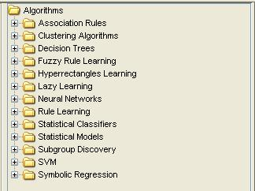
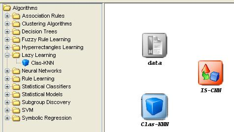

This category includes the data mining methods included in the KEEL Suite:

- Association Rules: Methods for extracting association rules from data.
- Clustering Algorithms: Clustering methods.
- Decision Trees: Methods for building decision trees.
- Fuzzy Rule Learning: Methods for performing fuzzy rule-based learning.
- Hyperrectangles Learning: Methods using hyperrectangles to extract knowledge from data.
- Lazy Learning: Learning methods which do not build a model in its training phase.
- Neural networks: Artificial neural networks.
- Rule Learning: Methods for performing rule-based learning.
- Statistical Classifiers: Classifiers based on statistical models.
- Statistical Models: Construction of statistical models based on data.
- Subgroup Discovery: Methods for subgroup discovery.
- SVM: Support vector machines.
- Symbolic regression: Methods for performing symbolic regression procedures.
To add any method to the current experiment, it is only needed to select it and click in the graph of the experiment:
